Planète
Mercure, le monde du Messager
La septième planète des dieux. La touche divine de Mercure ouvre la Voie de Mercure : la plus proche du soleil, sans air, son ciel noir et plein d'étoiles en plein jour, et dedans un soleil trois fois plus grand qu'à la maison, posé bas à l'est, qui ne se lève jamais davantage. Il coupe la planète en deux : à l'est le jour, brûlé, à l'ouest la nuit, glacée. Entre les deux, sur la ligne d'ombre, l'agora d'Hermès et son caducée de quatre-vingt-dix blocs.

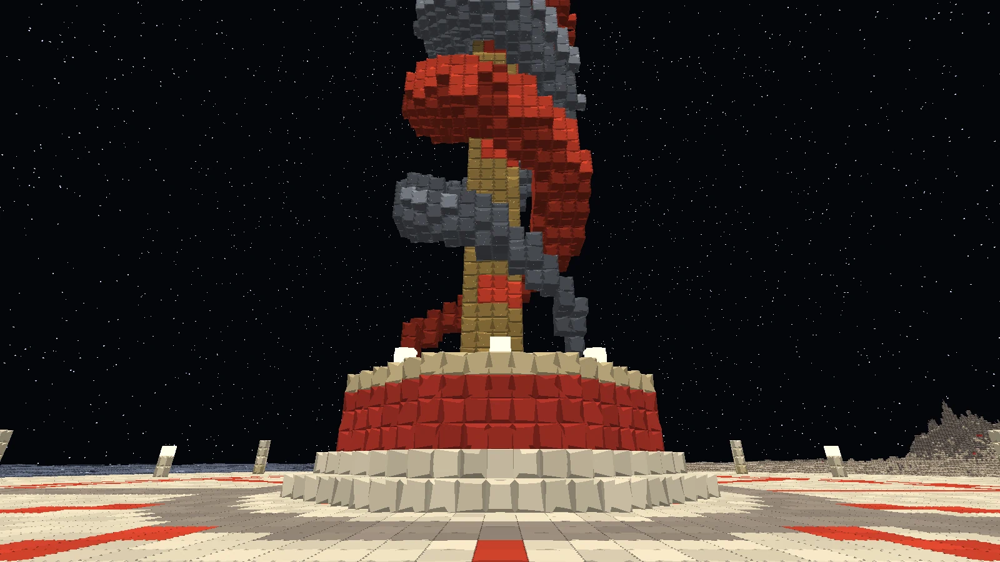
(agrandir l'image)
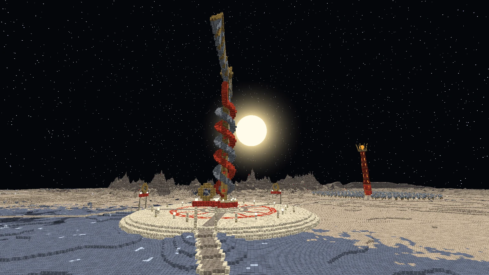
(agrandir l'image)
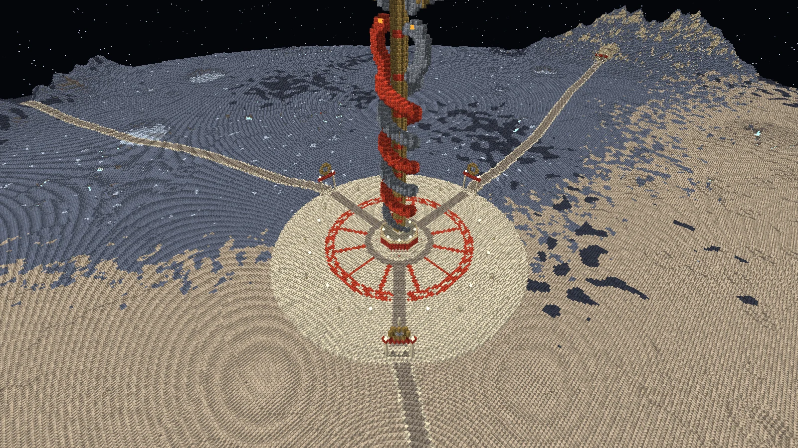
(agrandir l'image)
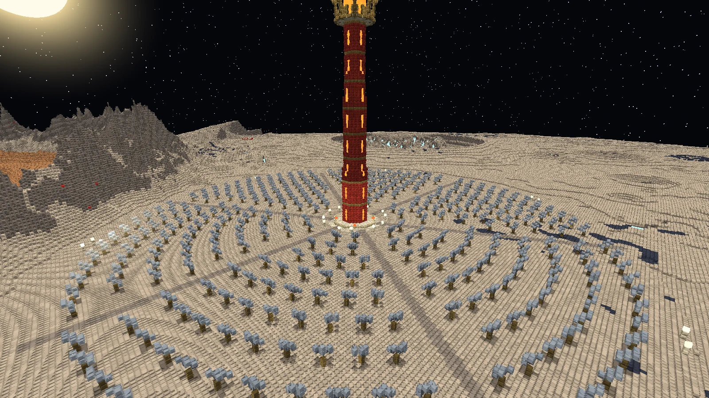
(agrandir l'image)Le voyage
- Les mêmes règles que pour les autres planètes : une fois par jour de jeu, cinq minutes au plus, le compte à rebours en haut à gauche, les invités par [Rejoindre], la touche divine pour rentrer plus tôt.
- On y pèse un peu plus du tiers de son poids : un saut franchit trois blocs, une chute est longue et douce.
- L'arrivée : sur l'agora d'Hermès, au pied du Kérykeion - le caducée géant -, face à lui. Le soleil est à votre droite, le jour derrière lui ; la nuit à votre gauche. Trois routes partent de l'agora : au nord vers le mont Cyllène, au sud-est vers le Grand Athanor, à l'ouest vers Argus.
La planète
Elle est la même dans tous les mondes, dessinée d'après les images de la sonde MESSENGER : des cratères sur des cratères, de toutes les tailles - une cuvette pour les petits, un fond plat et un pic central pour les moyens, des parois en terrasses pour les grands.
| Lieu | Où (x, z) | Ce qu'on y trouve |
|---|---|---|
| L'agora d'Hermès et le Kérykeion | 0, 0 | Une place ronde de calcaire doré, une frise de cinabre ; douze hermès en cercle, trois portes surmontées d'un disque de vermeil. Au milieu, le caducée : un bâton de vermeil de quatre-vingt-dix blocs, deux serpents qui s'y enroulent - l'un de vif-argent, l'autre de cinabre, les deux principes des alchimistes -, leurs têtes face à face sous une sphère et deux ailes de plumes d'argent |
| Le Grand Athanor | 236, 226 | Dans le jour : une tour de cinabre de quatre-vingts blocs, ses fentes rougeoyantes, au sommet un creuset de matière en fusion dans une couronne de vermeil ; autour, en anneaux, des centaines de miroirs solaires tournés vers elle. À son pied, quatre athanors à votre disposition |
| Le mont Cyllène et la grotte de Maïa | -40, -500 | La montagne où naquit Hermès, de calcaire pâle strié, un sanctuaire à son sommet. Un portail au pied de sa face sud ouvre un couloir éclairé jusqu'à la grotte de Maïa : sous sa voûte, sur une estrade, la première lyre - une carapace de tortue, deux cornes de vermeil, sept cordes de vif-argent |
| Argus aux cent yeux | -440, 190 | Dans la nuit, au fond du vieux bassin de Rembrandt : le géant qu'Hermès endormit puis tua, couché sur le dos, bras en croix, cent cinquante blocs de la tête aux talons, à moitié enfoncé dans le sol - et ses cent yeux, partout sur lui, qui luisent encore |
| Le Champ des Osselets | -40, 380 | Neuf osselets grands comme des maisons, en vermeil et en calcaire, là où ils sont tombés, et au milieu l'autel du sort et son hermès |
| Caloris Planitia et l'Araignée | 520, -80 | Le grand bassin d'impact, six cents blocs de large : un sol de lave ocre ridé de crêtes, ceint des massifs de Caloris ; en son cœur le petit cratère Apollodore et, rayonnant de lui, Pantheon Fossae - « l'Araignée » -, des fossés dont le fond est encore en fusion |
| Raditladi | 390, 480 | Un bassin à anneau de pics, des fossés concentriques dedans, et autour de l'anneau des creux : des dépressions au fond plat, d'un bleu pâle qui luit, qu'on ne trouve nulle part ailleurs - le cinabre est épais autour |
| Hokusai et Debussy | 230, -730 ; -280, 650 | Deux cratères jeunes, d'où partent des rayons d'éjecta clair sur des centaines de blocs |
| Les escarpements lobés : Discovery, Enterprise, Beagle Rupes | Nord-ouest, ouest, sud-est | De longues falaises de trente blocs, là où la planète s'est ratatinée en refroidissant |
| Les pôles | Les bords nord et sud | Le givre partout, et des cratères dont le soleil n'a jamais vu le fond, pleins de glace polaire |
| La Voie du Messager | Un anneau à 720 blocs du centre | Une route pavée qui fait le tour de la planète, taillée dans les massifs et posée en remblai sur les cratères ; un hermès tous les quarante blocs, et six relais - une plateforme ronde, un fanal, quatre hermès, un athanor. Son pavé fait courir plus vite |
Le jour : régolithe pâle cuit par le soleil. La nuit : régolithe bleui par le froid, du givre dans les creux et au fond des cratères, des lacs de vif-argent gelé lisses comme des miroirs, et la roche ombreuse des profondeurs rejetée autour de certains cratères. Sous tout cela, la pierre du grand cœur de fer de la planète.
Les créatures
Deux, et elles seules. La planète les fait venir autour de chaque visiteur - en créatif aussi : sept serpents et sept paons au plus, aucun en Paisible. Les serpents viennent du jour, les paons de la nuit ; sur la ligne d'ombre, où est l'agora, les deux. Aucun ne monte sur l'agora.
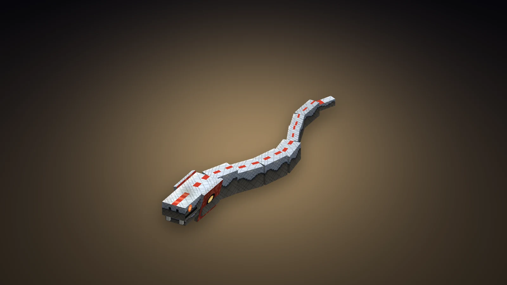
(agrandir l'image)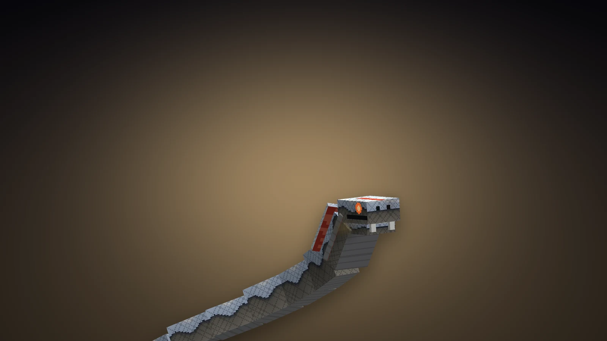
(agrandir l'image)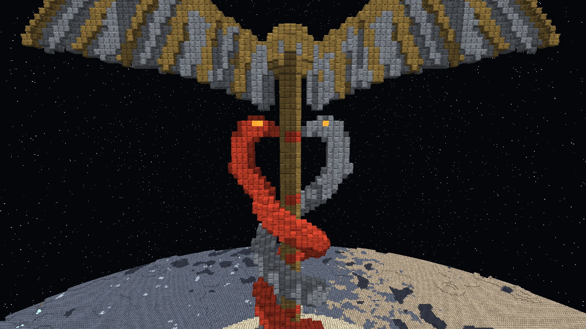
(agrandir l'image)Serpent de vif-argent
- Vie
- 34
- Dégâts
- 6 (9 en détente)
Un des serpents du caducée, descendu du bâton et redevenu sauvage : un long corps de métal vivant, un miroir qui coule, un capuchon bordé de cinabre, des yeux de braise. Le feu ne le brûle pas. De quelques blocs, il se dresse en déployant son capuchon, en sifflant - le moment de reculer - puis frappe, tout son corps jeté en avant. Sa morsure empoisonne au vif-argent : nausée et pas lourd.
Butin 1 à 2 écailles de vif-argent, 0 à 2 perles de vif-argent
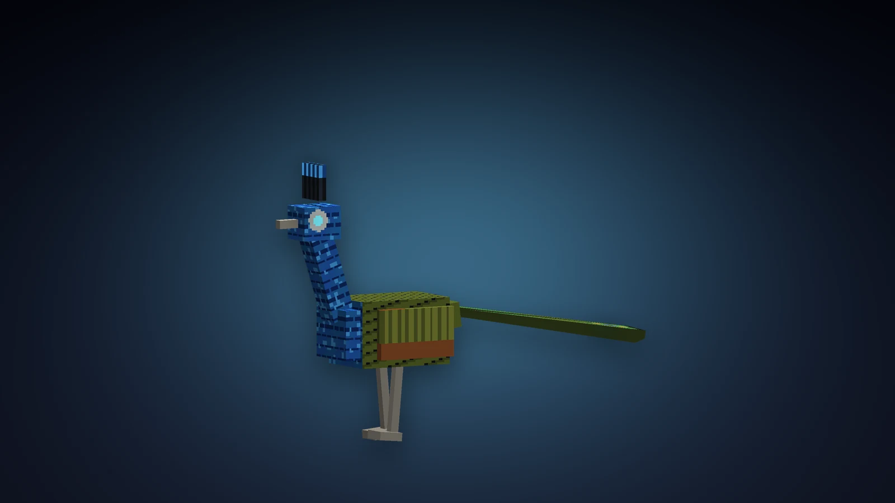
(agrandir l'image)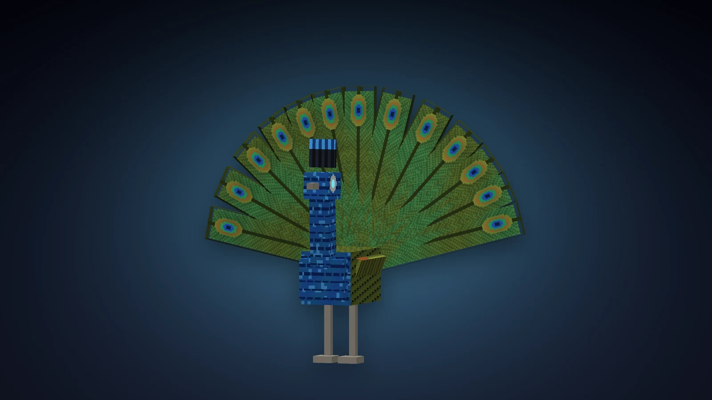
(agrandir l'image)Paon d'Argus
- Vie
- 36
- Dégâts
- 7
Quand Hermès eut tué le géant, Héra prit ses cent yeux et les posa sur la queue de son oiseau. Grand comme un homme, bleu et bronze, il court sur ses longues pattes et frappe du bec. De temps en temps il fait la roue : l'éventail se dresse, les cent yeux s'allument - et qui le regarde à ce moment est pétrifié quelques secondes, dans le noir. Détourner le regard à temps suffit.
Butin 1 à 3 plumes d'Argus ; une fois sur quatre, un œil d'Argos


Le Butin augmente les écailles et les plumes. Tués par un joueur, ils ont aussi 5 % de chances de laisser une Chlamyde ou des Talonnières du Messager : c'est la seule façon de les avoir.
Le vif-argent : du jour à la nuit
Le métal de Mercure, c'est le vif-argent - le mercure - et il faut la planète entière pour le faire, comme le faisaient les alchimistes :
- Le cinabre. Le minerai rouge de Mercure, dans la roche partout et surtout autour des creux lumineux (pioche en fer). Il donne du cinabre brut.
- L'athanor. Le four des alchimistes, nourri au soleil. Clic droit avec du cinabre brut : il en prend jusqu'à 16 et le grille pièce à pièce, tant qu'il voit le ciel de jour ; à chaque pièce une perle de vif-argent coule par le haut. Sur Mercure, où le soleil ne se couche jamais, 2 secondes la pièce ; ailleurs, au soleil, 8. Chaque miroir solaire à 4 blocs qui voit le ciel l'accélère de moitié (6 au plus). Le Grand Athanor en a quatre au pied de sa tour, chaque relais de la Voie en a un.
- Le froid. Le vif-argent est liquide. Posé sur le froid de la nuit - givre nocturne, glace polaire ou vif-argent gelé -, il se fige en 4 secondes : quatre perles font un lingot de vif-argent fixé. Ces blocs gardent leur froid partout : rapportés chez vous, ils figent encore.
Un raccourci, la nuit : les lacs de vif-argent gelé au fond des cratères, cassés à la pioche en fer, rendent directement 2 à 4 perles - à poser aussitôt sur la glace.
Les blocs
| Bloc | Où | Outil |
|---|---|---|
| Pierre hermienne, Régolithe brûlé, Régolithe nocturne, Roche ombreuse, Pierre du cœur de fer | La roche, le sol du jour et de la nuit, les profondeurs | Pioche ; pelle |
| Givre nocturne, Glace polaire | La nuit, les pôles. Ils figent le vif-argent ; on glisse dessus | Pelle ; pioche |
| Vif-argent gelé | Les lacs de la nuit. Glissant comme un miroir ; 2 à 4 perles | Pioche en fer |
| Basalte de Caloris, Éjecta clair | Le bassin de Caloris, les rayons des jeunes cratères | Pioche ; pelle |
| Régolithe en fusion | L'Araignée. Brûle qui marche dessus sans s'accroupir ; lumière 13 | Pioche |
| Croûte de creux | Le fond des creux. Scintille, lumière 9 | Pioche |
| Minerai de cinabre | Partout dans la roche, épais autour des creux | Pioche en fer |
| Calcaire de Cyllène, poli, escalier, dalle, colonne, sculpté (le caducée) | Le mont Cyllène, l'agora | Pioche |
| Briques de cinabre, escalier, dalle, muret, cinabre poli | L'agora, la tour de l'Athanor | Pioche |
| Bloc de vermeil, Bloc de vif-argent fixé | Le caducée. Bases de balise | Pioche en fer |
| Pierre d'Argos, Œil d'Argos | Le géant. L'œil regarde autour de lui et cligne ; lumière 12 | Pioche |
| Moly | Dans les creux : l'herbe qu'Hermès donna à Ulysse. Elle donne sa racine (sa fleur avec des cisailles) | À la main |
Toutes les matières de Mercure, dessinées par du code en pixel art : 16×16 pour les blocs, 32×32 pour les objets.
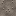
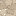
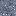
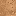
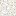
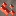
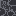
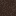
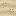
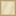
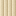
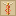
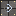
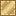
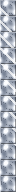
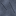
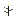
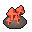
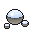
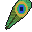
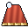
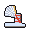
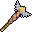
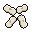
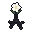
Pavé du Messager
Le pavé de la Voie du Messager, une bande de vif-argent incrustée. Qui court dessus court plus vite (Vitesse II, tant qu'on y est et un instant après) : de quoi bâtir vos propres routes, chez vous aussi.
Athanor
Le four solaire : il grille le cinabre en vif-argent tant qu'il voit le ciel de jour. Sa bouche rougeoie quand il travaille. Cassé, il rend le cinabre qu'il n'a pas grillé.
Miroir solaire
Un miroir dans un cadre de vermeil, un reflet qui le traverse. Posé à 4 blocs d'un athanor et sous le ciel, il l'accélère de moitié ; six au plus.
Fanal du caducée
Un petit caducée, ses deux serpents, sa sphère de vif-argent allumée entre deux ailes. Lumière 15.
Hermès de borne
La tête barbue d'Hermès sur son fût, comme au bord des routes grecques et à leurs carrefours. Il se tourne vers qui le pose.
Briques de cinabre
Le vermillon de l'agora et de la tour. Quatre font du cinabre poli ; escalier, dalle et muret au tailleur de pierre aussi.
Bloc de vermeil
De l'argent doré au mercure, comme le faisaient les orfèvres : la matière du caducée. Base de balise.
La Livrée du Messager
Ce que porte Hermès sur les vases, fait de ce dont Mercure est faite : un chiton court de lin blanc plissé, et par-dessus la chlamyde, un manteau de laine de cinabre agrafé à l'épaule droite par une fibule de vif-argent, bordé d'une grecque de vermeil, qui vole derrière vous quand vous courez ; le caducée sur la poitrine, la bourse du dieu des marchands à la hanche. Le pétase est un chapeau de vif-argent à large bord, une aile blanche dressée de chaque côté ; les talonnières, des sandales de vif-argent lacées de cinabre, une aile à chaque cheville qui bat d'autant plus vite que vous allez vite. Le vif-argent montre le ciel : un miroir qui coule sur chaque courbe.
| Pièce | Armure | Durabilité | Comment l'avoir |
|---|---|---|---|
| Pétase ailé du Messager | 3 | 363 | Artisanat : 3 lingots et 2 plumes d'Argus (les ailes) |
| Chlamyde du Messager | 8 | 528 | Butin des créatures de Mercure : aucune recette |
| Chiton du Messager | 6 | 495 | Artisanat : 7 lingots, en jambières |
| Talonnières du Messager | 3 | 429 | Butin des créatures de Mercure : aucune recette |
Chaque pièce : robustesse 2, enchantabilité 22, réparable au vif-argent fixé. Les quatre portées ensemble :
- Les talonnières : en l'air, appuyez sur saut - vous filez en avant sur les ailes de vos chevilles, deux fois avant de retoucher le sol, et la chute repart de zéro.
- La main du voleur : Hermès est le dieu des voleurs. Chaque créature que vous frappez a une chance sur quatre de laisser tomber un peu de son butin - un tirage de ce qu'elle porte, avec votre chance -, de son vivant, une fois chacune.
Le Caducée, les Osselets d'Hermès, la racine de moly
Caducée
Le bâton du héraut : 9 dégâts, rapide (2 coups par seconde), 1800 de durabilité. Clic droit : les deux serpents quittent le bâton - l'un de vif-argent, l'autre de cinabre - et filent vers ce que vous regardez, ou la créature hostile la plus proche à 24 blocs, en s'enroulant l'un autour de l'autre. Chacun mord (6 dégâts) et endort sa proie 6 secondes, comme le dieu endormit Argus : elle ne bouge plus, ne frappe plus - un coup la réveille. 5 secondes de recharge. Les grandes créatures (plus de 150 de vie) ne s'endorment pas.
Osselets d'Hermès
Le dieu de la chance tenait le sort. Clic droit : vous jetez les quatre osselets, chacun tombe sur une face qui vaut 1, 3, 4 ou 6 - les étroites (1 et 6) une fois sur dix, les larges (3 et 4) quatre fois sur dix -, et le coup se lit comme chez les Grecs :
- Le coup de Vénus (quatre faces différentes, environ 1 fois sur 26) : Chance III 3 minutes, Célérité II et Vitesse II 1 minute, et un hermaion - une aubaine - de 1 à 3 perles de vif-argent ;
- le Chien (deux 1 ou plus, environ 1 fois sur 19) : Malchance 1 minute et pas lourd 20 secondes ;
- sinon la somme : 16 ou plus, Chance I 1 minute et Vitesse I 30 secondes ; moins, Chance I 30 secondes.
La Chance est celle du jeu : elle pèse sur les butins, la pêche, les coffres. 20 secondes de recharge.
Racine de moly : l'herbe noire qu'Hermès arracha pour Ulysse contre les drogues de Circé. Elle pousse dans les creux de Mercure. Mangée, elle défait tous les effets néfastes (les bons restent) et soigne un peu.